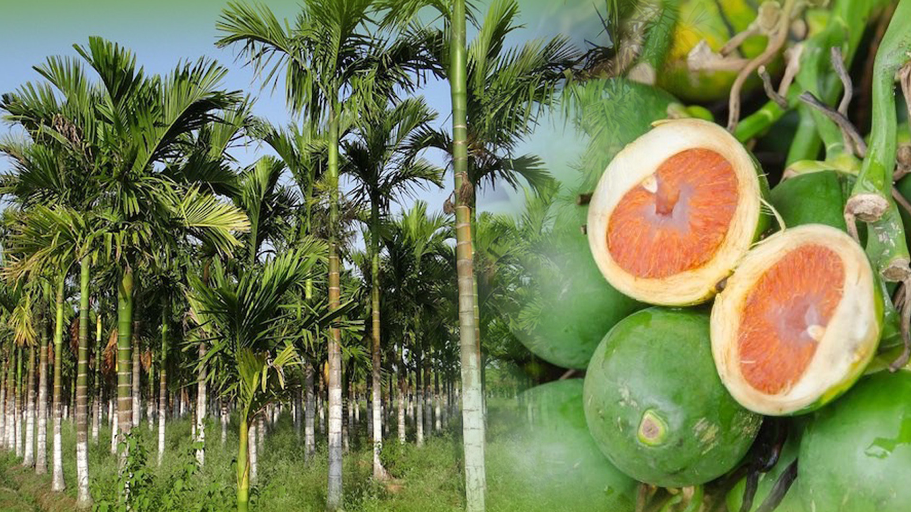
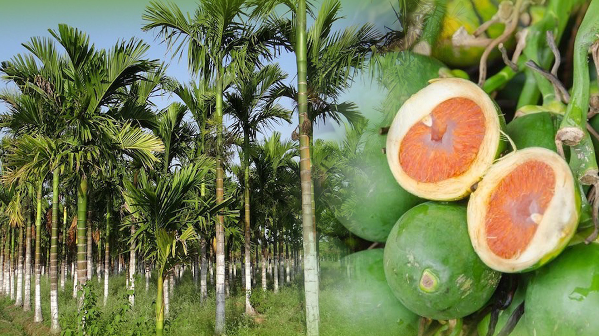

:ข้อมูลทางเภสัชวิทยาของต้นหมาก
1.สารที่พบมีหลายชนิด ได้แก่ Arecoline, Arecaidine, Arecolidine, Guvacoline, Guvacine, Isoguvacine, Leucocyanidin, Alkaloid 0.3-0.7%, Tanin 15% และพบน้ำมันระเหย 18% เป็นต้น
2.เมล็ดมีสาร Procyanidins ที่ช่วยยับยั้งการเจริญของเชื้อที่ทำให้เกิดโรคฝันผุ
3.เมล็ดมีสาร Arecatannin B1 ซึ่งเป็นสารที่สามารถยับยั้งเอนไซม์ที่มีความจำเป็นต่อเชื้อโรคเอดส์ ซึ่งควรทำการวิจัยต่อไป
4.สารที่สกัดได้จากเนื้อผลของผลหมาก เมื่อนำไปให้สัตว์ทดลองกิน พบว่ามีผลกระตุ้นให้กระเพาะและลำไส้ที่หดเกร็งเคลื่อนไหวได้ และยังช่วยทำให้น้ำย่อยของกระเพาะและลำไส้เพิ่มมากขึ้นอีกด้วย
5.สารก Arecoline มีคุณสมบัติกระตุ้นการทำงานของหัวใจ แรงดันโลหิต ปริมาณของน้ำตาลกลูโคสในสมอง
6.เนื้อผลมีฤทธิ์ฆ่าพยาธิตัวกลมและพยาธิตัวแบนได้ดี เพราะมีสาร Arecoline ซึ่งมีฤทธิ์ทำให้พยาธิมึนชาได้ โดยเฉพาะใช้เป็นยาถ่ายพยาธิในหมูจะมีประสิทธิภาพดีมาก (ผล)
7.เมื่อนำเนื้อในผลมาต้มกับน้ำแล้วป้อนให้หนูทดลองกิน พบว่าภายใน 20 นาที สามารถฆ่าพยาธิในหนูทดลองได้
8.สารสกัดด้วยเอทานอลจากเนื้อของผลหมากสง มีฤทธิ์ยับยั้งการเจริญของคะน้าได้
9.หมากมีสารอัลคาลอยด์ที่มีฤทธิ์ในการฆ่าเชื้อราและฆ่าเชื้อไวรัส
10.มีรายงานความเป็นพิษพบว่าเมล็ดหมากทำให้เกิดการก่อนกลายพันธุ์ เนื้องอกและมะเร็งซึ่งคาดว่าเกิดจากสารแทนนิน โดยพบว่าคนที่กินหมากจะมีความเสี่ยงต่อโรคมะเร็งในช่องปาก
11.มีรายงานว่าการเคี้ยวหมากอาจทำให้เกิดอาการลิ้นและเหงือกเป็นฝ้าขาว เกิดเส้นใยใต้เยื่อเมือกและการเกิดมะเร็งในช่องปาก ซึ่งน่าจะมาจากสาร Cytotoxic และ Teratogenic N- nitrosamines